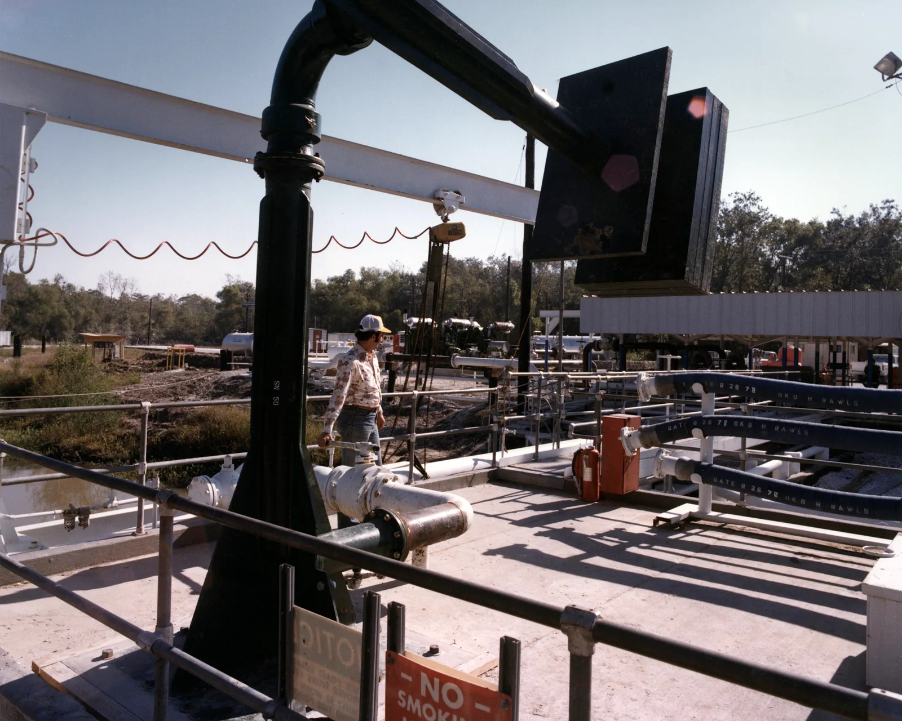
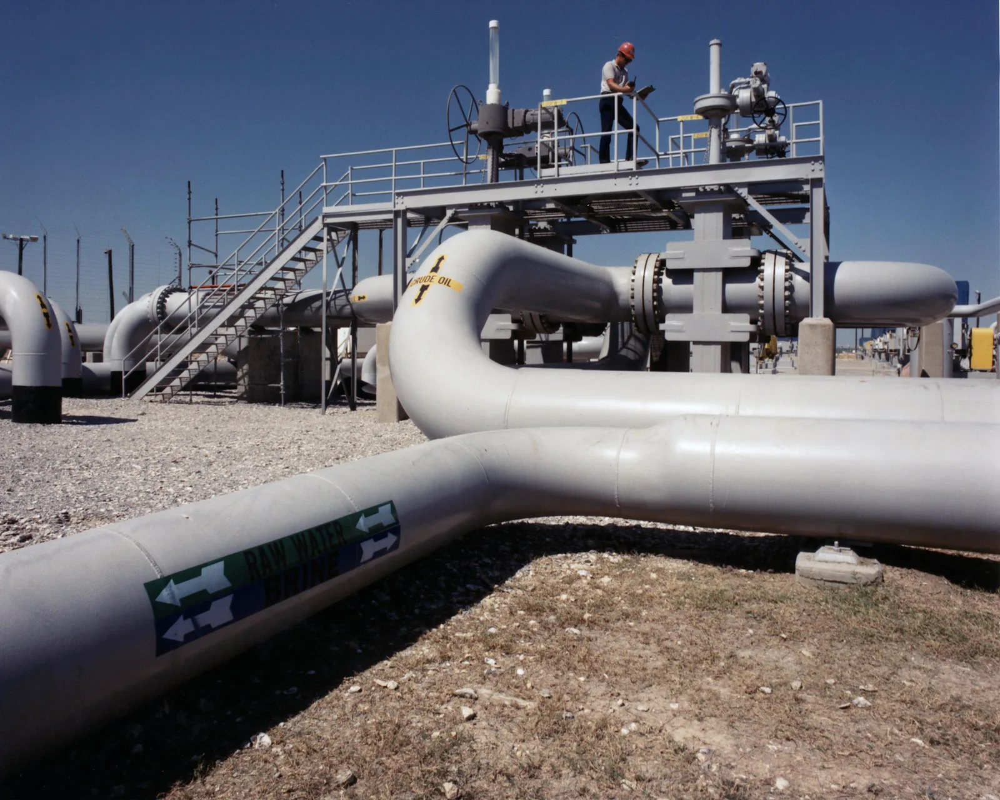

▲ 미국 전략석유비축기지(SPR) 시설. 현재 비축량은 2억9,870만 배럴로 1983년 이후 최저 수준까지 떨어졌다
미국의 전략석유비축량(SPR)이 2억9,870만 배럴까지 떨어지며 1983년 이후 최저치를 기록했습니다. 전쟁 이전 4억1,500만 배럴이었던 것과 비교하면 상당한 감소 폭입니다. 714백만 배럴에 달하는 전체 저장 용량 기준으로는 현재 약 42% 수준만 채워져 있는 상태입니다. 이런 급격한 방출의 배경에는 지난 2월 28일 미국과 이스라엘의 이란 공격 이후 이란이 호르무즈 해협을 봉쇄한 사건이 있습니다.
1. 호르무즈 해협, 그리고 4억 배럴 방출 결정
이번 사태의 발단은 지난 2월 28일 미국과 이스라엘이 이란을 공격한 이후 이란이 대응 조치로 호르무즈 해협을 봉쇄하면서 시작됐습니다. 전 세계 원유 물동량의 상당 부분이 지나는 이 해협이 막히자, 국제에너지기구(IEA) 회원국 32개국은 3월 4억 배럴 규모의 공동 비축유 방출 계획을 발표했습니다. 7월까지 이미 약 2억9,000만 배럴이 시장에 풀려나간 것으로 집계됩니다. 원유 공급망의 급격한 충격을 비축유 방출로 메우려 한 조치였지만, 그 대가로 미국의 전략 비축량 자체가 40년 만에 최저 수준까지 소진된 셈입니다.

▲ 전략석유비축기지 벌베이 터미널에서 원유 흐름을 관리하는 작업자. 국제에너지기구 32개국의 공동 방출 계획에 따라 대규모 물량이 시장에 풀려나갔다
2. 갤런당 4달러 — 운전자들이 체감하는 변화
비축유 감소는 곧바로 소비자 가격에 반영되고 있습니다. 미국 전국 평균 휘발유 가격은 갤런당 4.01달러로, 전년 대비 87센트나 올랐습니다. 원래도 유가가 높은 캘리포니아는 갤런당 5.59달러까지 치솟았습니다. 장거리 통근이 일상인 미국 소비자들에게 이는 상당한 체감 물가 상승 요인입니다. 특히 대형 SUV나 픽업트럭처럼 연비가 낮은 차량을 보유한 가구일수록 유류비 부담이 더 크게 다가올 수밖에 없습니다.
| 항목 | 수치 |
|---|---|
| 현재 비축량 | 298.7백만 배럴 |
| 전쟁 전 비축량 | 415백만 배럴 |
| 저장 용량 | 714백만 배럴 |
| 현재 충전률 | 약 42% |
| 전국 평균 휘발유 가격 | $4.01/갤런 |
| 캘리포니아 휘발유 가격 | $5.59/갤런 |

▲ 연비가 낮은 대형 SUV·픽업트럭 보유 가구일수록 최근 유가 상승의 체감 부담이 더 크다
3. "전쟁이 끝날 것 같지 않다" — 추가 방출 가능성
더 우려스러운 대목은 향후 전망입니다. 이란이 내건 호르무즈 해협 재개방 조건이 매우 까다로운 것으로 알려지면서, 업계에서는 "분쟁이 머지않아 끝날 것 같지 않다"는 분석이 나오고 있습니다. 이는 추가적인 비축유 방출이 필요해질 수 있다는 의미이기도 합니다. 다만 오바마 행정부에서 일했던 한 전직 관료는 "비축유의 안정성이나 추가 방출 능력에 대해서는 걱정하지 않는다"며, 시스템 자체의 대응 여력은 충분하다는 입장을 밝혔습니다.

▲ 전략석유비축기지의 원유 이송 배관. 이 배관을 통해 지하 암염동굴에 저장된 원유가 필요 시 시장으로 방출된다
4. 왜 하필 소금 동굴에 저장할까
미국의 전략석유비축유는 지상 탱크가 아니라 텍사스·루이지애나 멕시코만 연안의 지하 암염동굴에 저장됩니다. 암염층은 자연적으로 밀폐성이 뛰어나고 굴착·유지 비용이 낮아, 대규모 원유를 장기간 안전하게 저장하기에 적합한 지질 구조로 꼽힙니다. 이런 지하 저장 방식 덕분에 지상 화재나 자연재해에 상대적으로 강하지만, 반대로 한 번 방출을 시작하면 배관과 펌프 설비의 물리적 한계 때문에 방출 속도를 무한정 끌어올리기는 어렵다는 제약도 있습니다.
5. 정리 — 자동차 소비자에게 남은 숙제
전략 비축유 문제는 당장의 지정학적 이슈로 보이지만, 결국 운전자들의 지갑과 직결되는 문제입니다. 고유가 국면이 장기화될 경우 하이브리드·전기차에 대한 수요가 다시 힘을 받을 가능성이 있고, 반대로 연비가 낮은 대형차 구매를 망설이게 만드는 요인으로도 작용할 수 있습니다. 호르무즈 해협 정세와 미국의 비축유 정책이 앞으로 어떻게 전개되는지가, 하반기 자동차 시장의 파워트레인 선택 트렌드에도 영향을 미칠 것으로 보입니다.